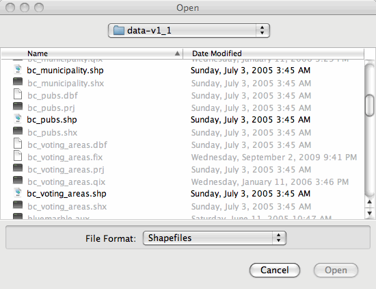
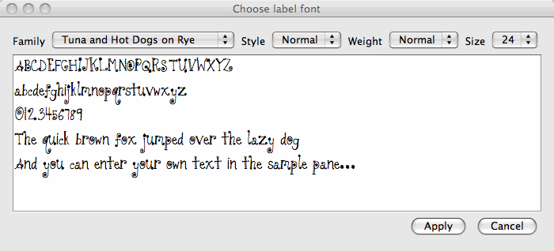
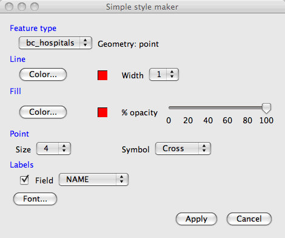

Dialog classes¶
JFileDataStoreChooser¶
This is a dialog class to prompt a user for a data store such as a shapefile. It relieves you of having to work with JFileChooser and FileFilters directly.
To prompt for a file of given format you can use the static showOpenFile method as in this snippet:
// Prompt the user for a shapefile (the null argument here is // for a parent frame or dialog) File file = JFileDataStoreChooser.showOpenFile("shp", null); if (file != null) { // use the shapefile }This displays the following dialog:
Formats with alternate file extensions
Another form of the showOpenFile method allows alternate file extensions to be specified:
// Prompt for a geotiff file that may have a tif or tiff // extension File file = JFileDataStoreChooser.showOpenFile(new String[]{"tif", "tiff"}, null); if (file != null) { // use the file }Prompting for an output file name
In this snippet, taken from the GeoTools example demo Shp2Shp.java, we create a JFileDataStoreChooser object and prompt the user for the name of an output shapefile:
String newPath = ... JFileDataStoreChooser chooser = new JFileDataStoreChooser("shp"); chooser.setDialogTitle("Save reprojected shapefile"); chooser.setSelectedFile(new File(newPath)); int returnVal = chooser.showSaveDialog(null); if (returnVal != JFileDataStoreChooser.APPROVE_OPTION) { System.exit(0); } File newFile = chooser.getSelectedFile();
{kind=link}
JFontChooser¶
No surprises here... it’s a font dialog.
This is used by JSimpleStyleDialog but is also available for general use. It includes a static helper method to display the dialog and return a GeoTools Font object.
{kind=link}
Basic use:
import org.geotools.styling.Font; ... // args are parent JFrame or JDialog, title and initial font Font font = JFontChooser.showDialog(null, "Choose a label font", null); if (font != null) { // use the font... }Setting a default font:
import org.geotools.styling.Font; ... Font myFaveFont = ... JFrame owner = ... // dialog to display sample text using myFaveFont Font selectedFont = JFontChooser.showDialog(owner, "Your favourite font", myFaveFont); if (selectedFont == null) { selectedFont = myFaveFont; }
JSimpleStyleDialog¶
This dialog presents basic options for point, line, polygon and text styling. It saves you from having to provide SLD documents or write styling code for your application when the feature styling requirements are modest.
{kind=link}
Example:
ShapefileDataStore shapefile = ...
Style style = JSimpleStyleDialog.showDialog(shapefile, null);
if (style != null) {
// use the Style object
}